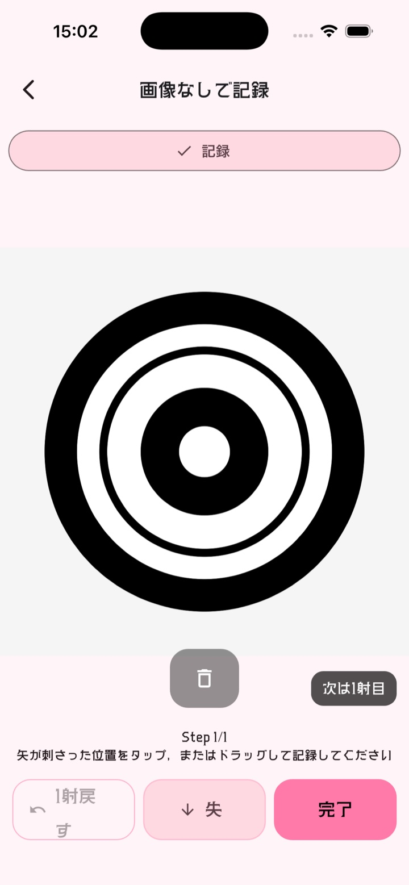
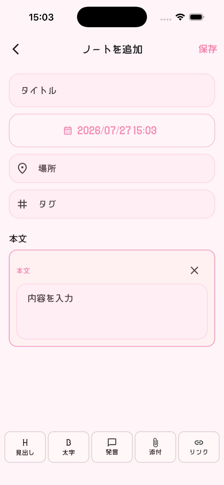
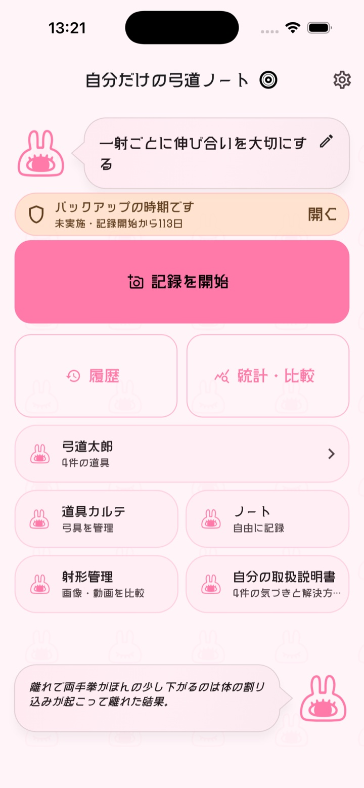
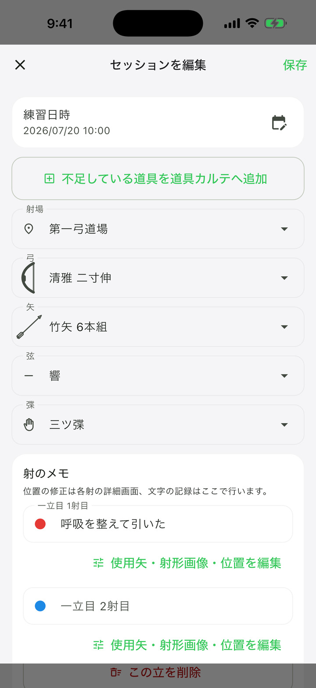

矢所の記録
写真または画面上の的へ、一射ごとの着弾位置を記録できます。
iOS版 7.3.2をApp Storeで公開中 · 弓道人のための記録・分析アプリ
記録するだけでは終わらない。
稽古、道具、成長。
あなたの弓道人生を
一冊のノートとして残します。



できること
射の結果だけでなく、道具や気づきも一緒に残し、 時間の流れの中で成長を振り返ることができます。
写真または画面上の的へ、一射ごとの着弾位置を記録できます。
弓、矢、弦、弽の情報と使用履歴をまとめて管理できます。
記録を期間ごとに表示し、成長を確認できます。
メモや履歴を通して、課題と成長を自分の言葉で残せます。
射ごとの射形画像と気づきを残し、2枚を並べて比較できます。
セッションの既定セットを保ちながら、使用した矢セットと矢番号を射ごとに記録できます。
記録、プロフィール、設定、道具、ノート、保存画像をまとめて書き出し、 利用者自身の操作で復元できます。
最新リリース候補
Version 7.4.1では、近的・遠的・巻藁を一つのアプリで記録できます。 遠的の得点、距離、的、風、練習種別ごとの履歴・統計に加え、 巻藁の保存操作やセッション統合、テーマ表示を改善しました。
App Store現行版
Version 7.3.2では、履歴から射形画像を見つけやすくし、 射形画像から対応する射へ移動できるようになりました。 ノートでは画像・動画・音声を内容に合わせて確認でき、 記録・統計・テーマ設定・チュートリアルの操作も改善しました。
Version 7.3.2はApp Storeで公開中です。
一冊のノートとして
後から道具や気づきを補い、 散布図や統計で見返すことで、日々の記録は自分だけの弓道史へ育っていきます。

ダウンロード
iOS版の現行バージョンは7.3.2です。
Android版は現在公開準備中です。
ロードマップ
弓道人の記録をより深く育てる機能を、段階的に追加していきます。
サポート
使い方、サポート、問い合わせ先、データの取り扱いを確認できます。